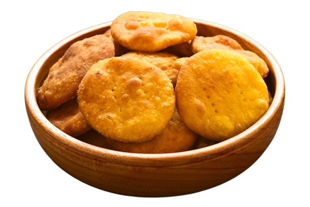
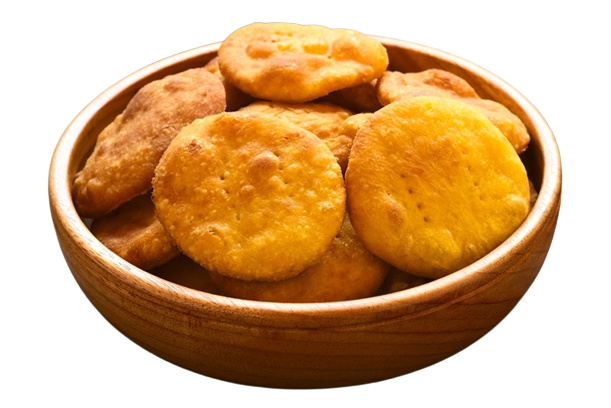
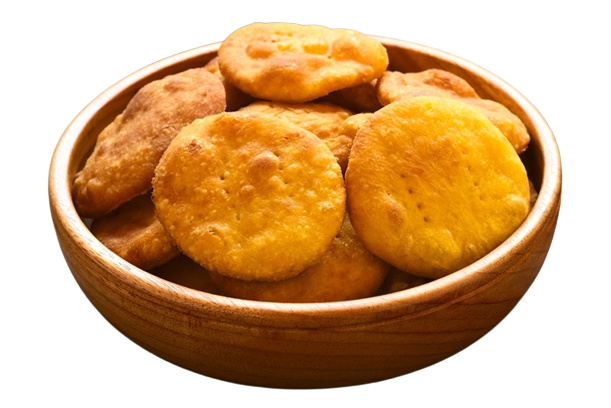

La gastronomía de Chile es producto de la mezcla entre la tradición indígena y el aporte colonial español,combinando sus alimentos, costumbres y hábitos culinarios. A lo largo del tiempo, ha tenido aportes menores de cocinas europeas por parte de inmigrantes, como la alemana e italiana; sin embargo, en el siglo XX tuvo una importante y marcada influencia de la cocina francesa.Estos elementos conformaron lo que se conoce como “cocina criolla chilena”, la cual destaca por sus variados sabores, ingredientes y colores, resultado de la diversidad geográfica del país, acompañada de bebidas alcohólicas como el pisco y el vino chilenos. Los platos más tradicionales de la cocina chilena son el ajiaco, los anticuchos, los asados, la calapurca, el cancato, la carbonada, la cazuela, el chapalele, el charquicán, el curanto, las empanadas de pino, las humitas, el milcao, la paila marina, la pantruca, el pastel de choclo, el pastel de papa, el pescado frito, los porotos granados, el pulmay y el tomaticán, entre muchos otro.
Según la Fundación Imagen de Chile en 2016, hay 14 tipos de cocina chilena: del norte grande; norte chico; urbana de calles; urbana de restaurantes; urbana casera; campesina huasa; costera; de fiesta; sureña centroeuropea; indígena mapuche; chilota; patagónica; chilena de ultramar y alta cocina chilena. Artefactos locales son la cocina solar Antu, el horno chileno y el tostador chileno. En las ciudades, es ofrecida en las picadas, en un ambiente alusivo a la chilenidad. Desde su instauración en 2009, y para reconocer la historia gastronómica de Chile y la actual alimentación del pueblo chileno, el “Día de la Cocina chilena” se ha celebrado en el país cada 15 de abril. Junto con la llegada a Chile de los conquistadores españoles al mando de Pedro de Valdivia, también llegaron los ingredientes que se transformarían en la base de la futura alimentación criolla. Entre los productos que trajeron están el trigo, los cerdos,las ovejas, los pollos y los vacunos. Estos ingredientes base se mezclaron y, así, dieron origen a los platos más típicos de Chile.
